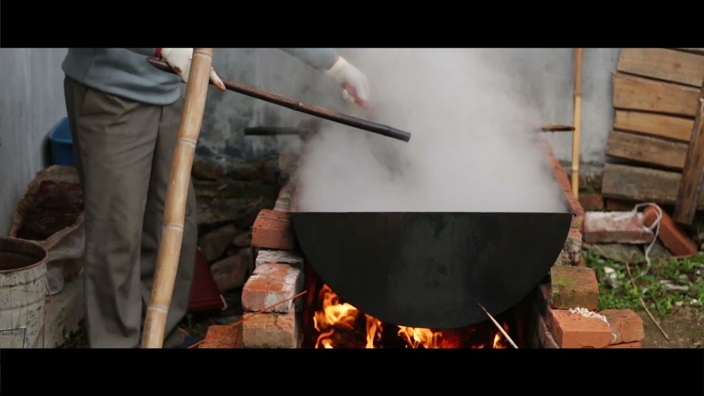

Creative · ZJNU studio: 2015–2018; Sichuan Radio and Television: Jan–Mar 2018
Documentary Storytelling
Field recording, interviews, and editing across student films and television
I worked across camera, sound, directing, interviewing, and editing in ZJNU studio productions, then interviewed doctors and edited episodes at Sichuan Radio and Television. The subjects ranged from cultural heritage to graduate employment and financial scams. My responsibilities varied by assignment, linking field recording with the construction of a narrative.
My role
Camera, sound, directing, interviewing, and editing across different assignments; television interviewer and editor
A privacy-softened frame from the documentary archive linked in my CV.
Learn the story from several positions
At the Photography Studio of ZJNU's College of Communication and Creative Culture, I worked across camera work, sound recording, directing, interviewing, and editing. My responsibilities changed from project to project.
My filming and editing work included six educational documentary episodes about intangible cultural heritage, a newsreel about college graduates seeking employment, and a short film warning students about financial scams. These projects gave me distinct subjects to work with, from explaining cultural practices to shaping a story around a public concern.
Name the surviving cultural-heritage films
Three surviving files identify the documentary subjects and inheritors directly. They belong to the broader six-episode cultural-heritage series described in my portfolio.
My archived studio record lists camera work, sound recording, directing, interviewing, and editing across the series, but it does not preserve a film-by-film credit breakdown. I therefore retain those responsibilities at the series level rather than assigning every role to each individual film.
Wugui Duancha · inheritor Chen Weiyu — surviving film sample; individual assignment role not separately documented.
Pujiang Bamboo Weaving · inheritor Ye Daorong — surviving film sample; individual assignment role not separately documented.
Yiwu Wooden Movable Type · inheritor Wang Yijun — surviving film sample; individual assignment role not separately documented.
Work to a television production rhythm
From January to March 2018, I worked as an interviewer and editor at Sichuan Radio and Television on Yi Sheng Lai Le, a program covering health-related topics. I prepared interview questions, interviewed doctors three to four times a week, and discussed weekly topics with the team.
I edited two episodes a week in Adobe Premiere Pro and created video effects in After Effects. That weekly rhythm connected question preparation, field interviewing, and post-production within the same job.
Connect fieldwork with the edit
I return to these projects when thinking about how an audience encounters information. Preparing a question, recording an answer, and choosing its place in a sequence are related editorial decisions. I am interested in which parts of a story belong in an interview and which need images or sound. The linked films are samples from this broader period of production work.

A second frame from the linked film archive.
Outcomes
I contributed filming and editing to cultural-heritage documentaries, an employment newsreel, and a student financial-scam film.
I maintained a television schedule of doctor interviews and two edited episodes per week.
I independently combined a dancing 3D animation, a Unity interface, and an iPad projection pyramid. Moving from animation to a physical display meant designing both the digital material and the way a person would encounter it in space.
Independent creator: 3D animation, interface design, and projection setup
I built Physics Balls, Tetris, and Reversi as C++ object-oriented design projects. These small games brought programming and interaction together: a rule in the program has to become something a player can see, respond to, and understand.